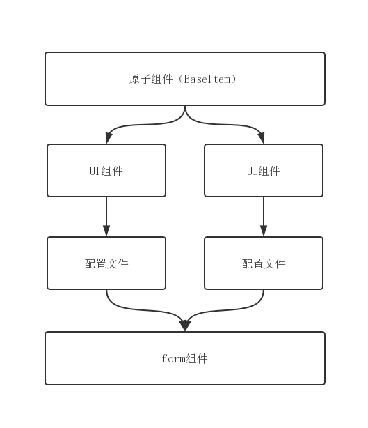

由于一直在做中台业务，后台项目特别多，但是后台项目的特点是：大量的列表和大量表单，重复开发会降低效率，所以我这边总结了一下使用antd组件搭建form的快捷方法。希望能对大家有用。
首先传统搭建一个form表单，那么代码可能会是下面这样子
import React from 'react';
import { Form, Input } from 'antd';
@Form.create()
class MyTestForm extends React.Component {
render() {
const { form: { getFieldDecorator } } = this.props;
return(
<Form>
<Form.Item label='姓名'>
{
getFieldDecorator('username', {
rules: [
{
required: true,
message: '这是必填项'
}
]
})(<Input placeholder="placeholder" />)
}
</Form.Item>
<Form.Item label='密码'>
{
getFieldDecorator('password', {
rules: [
{
required: true,
message: '这是必填项'
}
]
})(<Input placeholder="placeholder" />)
}
</Form.Item>
</Form>
)
}
}
export default MyTestForm;目前只有两个表单项，看起来代码还挺清晰的，假如这个表单是很复杂的表单，有多个表单项，这块的代码会很长，维护和开发起来都是不方便，最重要的再来一个大的表单，你还是会需要写这么多的代码。这样就影响了开效率。
我们想要的是，尽量少写（不写）重复性的代码，让代码的复用性更高。我这块做了一些优化，主要的流程如图：

主要的几个点：
BaseItem组件，BaseItem具备的能力是form的能力，双向绑定的能力等，纯净的组件，不包含任何UI层面的东西。具体的代码如下
//BaseItem.js（原子层）
const BaseItem = (props) => {
const { form: { getFieldDecorator }, config } = props;
const { name, children, ...argv } = config;
return name ? getFieldDecorator(name, { ...argv })(children) : (children);
}
export default BaseItem;//ItemLayout.js（UI组件）
import React from 'react';
import { Form } from 'antd';
//Layout也可以用自己的UI组件
const Layout = ({ config: { itemOptions }, children }) =>
<Form.Item { ...itemOptions } >{ children }</Form.Item>
const hidden = (isHidden) => {
const type = typeof(isHidden);
return (type === 'function' && isHidden()) || type === undefined || isHidden;
//默认是显示
}
class ItemLayout extends React.Component {
render() {
const { children } = this.props;
return(
<>
{
React.Children.map(
children, (child, i) => {
const { config: { isHidden, ...argv}} = child.props;
return hidden(isHidden) ? null : //具有隐藏表单项能力
React.cloneElement(
<Layout { ...argv }>{ child }</Layout>,
{
...children.props
}
)
}
)
}
</>
)
}
}
export default ItemLayout;//config.js（配置文件）
import React from 'react';
import { Input } from 'antd';
export const formConfig = () => {
return [
{
itemOptions : { //Form.Item的api配置
label: '姓名'
//...argv
},
name: 'username',
initialValue: '',
rules: [],
children: <Input />
//...argv
},
{
itemOptions : {
label: '密码'
},
name: 'password',
initialValue: '',
rules: [],
children: <Input />,
isHidden: true //隐藏此项 默认是显示
},
{
itemOptions : {
label: '密码'
},
name: 'password',
initialValue: '',
rules: [],
children: <Input />,
isHidden: () => false //通过方法来动态显示隐藏
},
]
}支持
antd Form所有的api。配置文件为什么是使用函数的形式？因为可以通过函数的参数，实现配置文件和页面之间进行数据的传递。
在页面就这样使用，代码如下
import React from 'react';
import { Form, Input } from 'antd';
import { formConfig } from './config.js';
import BaseItem from './BaseItem';
import ItemLayout from './ItemLayout';
@Form.create()
class MyTestForm extends React.Component {
render() {
const { form } = this.props;
return(
<Form>
{
formConfig().map((item, i) =>
<ItemLayout><BaseItem key={i} config={item} form={form}/></ItemLayout>)
}
</Form>
)
}
}
export default MyTestForm;相比传统搭建Form是不是快捷了很多，而且页面代码层面更显得更清晰。
注意：
假如是想使用自定义的组件，（一个个性化的业务组件），简单点，我对Input的封装
//自动trim的Input
import { Component } from 'react';
import { Input } from 'antd';
class TrimInput extends Component {
handleChange = (e) => {
e.target.value = e.target.value.trim();
this.props.onChange(e.target.value); //Input Chang 后将值传递给props
}
render() {
const { value, ...argv } = this.props;
return(
<Input
value={ value } //将props的填在Input中
{ ...argv }
onChange={this.handleChange}/>
)
}
}
export default TrimInput;自定义的业务组件需要具备双向数据流的能力，最重要的一点是在更新的时候需要 调用
this.props.onChange(data)。
SearchForm）假如觉得这还不够过瘾，那么一起来基于BaseItem来再包装业务组件吧。相信每个后台都有搜索能力吧，那么我们就包装一个搜索的SearchForm。
主要就是增加一个search功能并把form的值传递出去。
主要代码如下：
//searchForm.js
import React from 'react';
import { Form, Button } from 'antd';
import BaseItem from './BaseItem';
import ItemLayout from './ItemLayout';
@Form.create()
class SearchForm extends React.Component {
handleSearch = () => {
const { form: { validateFields }, search } = this.props;
validateFields((err, fieldsValue) => {
console.log(fieldsValue);
if(!err) {
search && search(fieldsValue);
}
})
}
render() {
const { form, searchConfig, search, form: { resetFields } } = this.props;
return(
<>
<Form onSubmit={this.handleSearch}>
{
searchConfig().map((item, i) =>
<ItemLayout><BaseItem key={i} config={item} form={form}/></ItemLayout>)
}
{
search && <div>
<Button htmlType="submit" type="primary" style={{marginRight: '20px'}}>
搜索
</Button>
<Button onClick={() => resetFields()}>重置</Button>
</div>
}
</Form>
</>
)
}
}
export default SearchForm;页面里面使用，表单项还是抽成配置文件使用：
//config.js 查询条件
export const searchConfig = () => {
return [
{
itemOptions : {
label: '条件一'
},
name: 'name1',
initialValue: '',
rules: [],
children: <Input />
},
{
itemOptions : {
label: '条件二'
},
name: 'name2',
initialValue: '',
rules: [],
children: <Input />
}
]
}import React from 'react';
import { searchConfig } from './config';
import SearchForm from './SearchForm';
class MyTestForm extends React.Component {
handleSearch = value => {
console.log(value);//获取到的查询条件
}
render() {
return(
<SearchForm searchConfig={searchConfig} search={this.handleSearch} />
)
}
}
export default MyTestForm;这样子写查询表单是不是很快呀，以后遇到查询就引用这个组件，然后抽一个配置文件，这样就OK了。
Modal + Form还有也会经常遇到这种情况，弹窗里面的Form，这样子就需要给弹窗增加收集数据的能力。相当于我们把searchForm的组件放在 Modal 里面。 具体实现代码就不贴了。
antd Form 需要注意的几个问题。initialValue 这个属性只是设置表单的初始值，当需要动态更改表单的值的时候，使用 setFieldsValue
resetFields这个属性是重置一组输入控件的值与状态，（将值重置为initialValue ， 而不是清空数据，需要清空数据还是使用setFieldsValue）
antd Form 新的改动antd Form 将在第4个版本使用 rc-field-form, 但是还没有发布，我是在4.0-prepare分支上看到。
那么两个底层组件 有什么区别呢？
首先rc-field-form 会尽量在api层面上保持一致，但是仍有地方做了改动。 主要是以下几点：
当没有手动更新过表单的时候，将不会收集initialValues 的值
在rc-form里面，如果用户没有操作过表单，将会从form的initialValues 收集值。他们认为这是一个bug，但是好多用户是用了这个，所以他们不做修复。在rc-field-form中，将不会有这个bug。如果想改变组件的值，使用 setFieldsValue 代替。
嵌套的name使用数组代替字符串
rc-form里面支持user.name，最终会被解释成为{user:{ name: '' } }
rc-field-form将是['user', 'name'] 解释成为 {user: { name: '' }} 并且会把 user.name解释成为{ ['user.name']: ''}
删除validateFieldsAndScroll这个属性
是因为使用了findDomNode，但是findDomNode在StrictMode中被标记为警告。认为这是对表单组件的过度控制。
getFieldsError 将总是返回来数组
rc-form 当没有错的时候，返回的是null，rc-field-form现在返回的是一个空数组
删除了validateFields的callback函数
是因为ES8支持async/await,没有理由不使用它。我们使用的时候应该是
async function() {
try {
const values = await form.validateFields();
console.log(values);
} catch (errorList) {
errorList.forEach(({ name, errors }) => {
// Do something...
});
}
}setFields将不触发onFieldsChange和setFieldsValue不触发onValuesChange
写这篇文章主要是自己做后台最Form的总结，还有是为大家提供一种思路，后台快速开发的方式。
后面还会更新其它antd 组件，主要是如何开发更适合业务场景的组件。